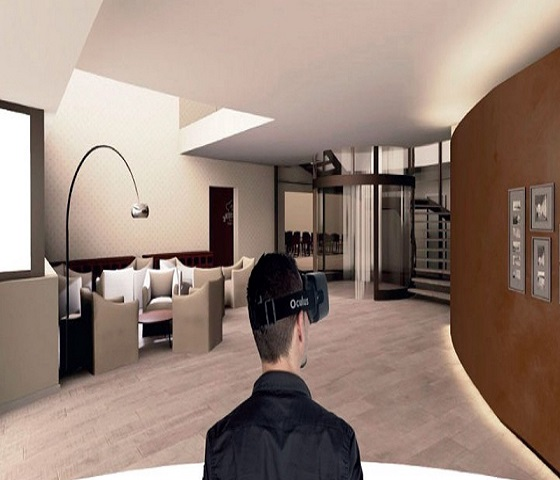
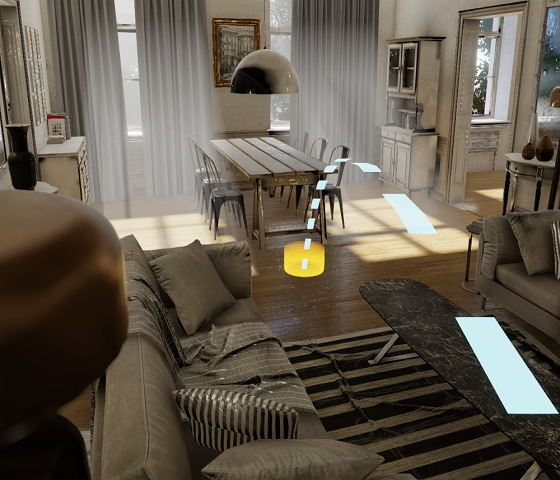
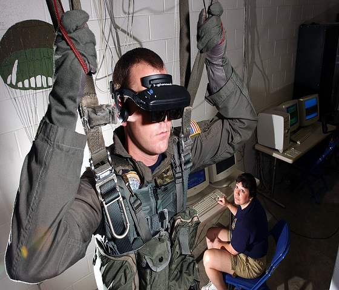
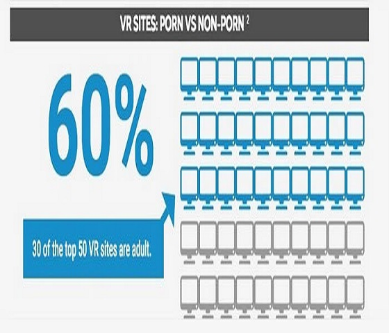

Domaine de la VR
La réalité virtuelle connait un grand boom depuis plus d'un an. De plus en plus d'applications et de domaines s'intéressent aux possibilités offertes par la VR. Nous allons donc faire ensemble un tour d'horizon sur les différents domaines qui exploitent la VR.
Jeux Vidéos
Les jeux vidéos sont bien évidemment le premier domaine à s'être intéressé à la VR puisque ce domaine cherche à offrir aux joueurs des expériences de plus en plus réalistes et immersives, sachant qu'en plus les joueurs sont des personnes plus disposés aux technologies numériques. Pourtant malgré que ce domaine soit celui qui est lancé l'engouement envers la VR ce n'est pas le seul à s'intéressé de près à cette technologie.
Voici quelques liens montrant les possibilités qu'offrent la VR au monde vidéoludique:
La VR et l'HTC Vive VR Roller CoasterMédecine
La réalité virtuelle est également utilisé en médecine pour traiter des patients atteints de nervosité, d'anxiété ou de certaines phobies comme la claustrophobie. Il est également possible de montrer la future utilisation d'une prothèse à un patient qui va subir une chirurgie. Enfin, cela peut servir à réduire l'anxiété de certains patients en apportant un coté ludique au cadre de l'hopital.
Voici un lien vers une vidéo de présentation de Vtopia Surgical, la toute première plateforme virtuelle dédiée uniquement à la santé:
Vtopia SurgicalImmobilier
L'immobilier s'investit lui aussi dans la VR, la VR permettant de simuler un environnement et d'y immerger son utilisateur, on comprend parfaitement l'intérêt que lui porte ce domaine puisque cela permetterai de visiter différents appartements sans avoir à ce déplacer et donc de gagner du temps.

Le moyen de déplacement dans le bien immobilier à visité serai le suivant:

(H.S: Si vous vous demandez pourquoi la VR utilise la téléportation (déplacement instantané si vous avez la référence), c'est tout simplement pour tromper le système vestibulaire, organe responsable de l'équilibre, pour éviter les nausées et autres).
Armée
Vous vous en doutez, l'armée s'intéresse de très près à la VR, étant un moteur dans la recherche de la nouvelle technologie. Comme dit précédemment, la capacité à simuler de la VR offre à l'armée la possibilité de former des hommes à différents situations (comme le saut en parachute, le pilotage ...) sans pour autant devoir les mettre en situation réelle.

Exemple d'un soldat américain simulant un saut en parachute.
Pornographie
Cela peut paraître étonnant, mais l'industrie du porno se penche elle aussi sur le cas de la VR, puisque sa capacité d'immersion est énormement demandé par les consommateurs de films pornographiques. 30 des 50 sites VR les plus visités sont des sites pornographiques soit plus de 50%. Vous comprenez donc que cette industrie y investit beaucoup.

(Non il n'y aura pas d'image pour que vous puissiez vous rincer l'oeil, vil garnement.)